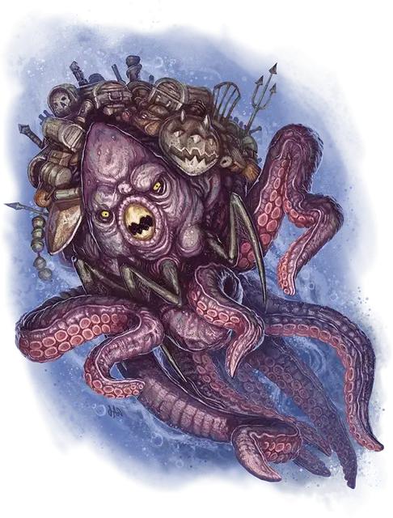

Моркот
Morkoth
Большая Аберрация, обычно хаотично-злая

Класс Доспеха 17 (природный доспех)
Хиты 165 (22к10 + 44)
Скорость 25 футов, плавая 50 футов
| мод | спас | ||
|---|---|---|---|
| СИЛ | 14 | +2 | +2 |
| ЛОВ | 14 | +2 | +6 |
| ТЕЛ | 14 | +2 | +2 |
| мод | спас | ||
|---|---|---|---|
| ИНТ | 20 | +5 | +9 |
| МДР | 15 | +2 | +6 |
| ХАР | 13 | +1 | +1 |
Навыки Восприятие +10, История +9, Магия +9, Скрытность +6
Чувства слепое зрение 30 футов, тёмное зрение 120 футов, пассивное Восприятие 20
Языки Телепатия 120 фт.
Опасность 11 (7200 опыта)
Бонус мастерства +4
Среда обитания Побережье, Под водой
Особенности
Амфибия. Моркот может дышать и в воде и на суше.
Действия
Мультиатака. Моркот совершает либо две атаки Укусом и одну атаку Щупальцем, либо совершает три атаки Укусом.
Укус. . Рукопашная атака оружием: +6 к попаданию, досягаемость 5 футов, одна цель. Попадание: 9 (2к6 + 2) рубящего урона плюс 10 (3к6) урона психической энергией.
Щупальца. . Рукопашная атака оружием: +6 к попаданию, досягаемость 15 футов, одна цель. Попадание: 15 (3к8 + 2) дробящего урона и цель становится схваченной (Сл высвобождения 14) если она Большого размера или меньше. До окончания захвата цель опутана и получает 15 (3к8 + 2) дробящего урона в начале каждого хода моркота и моркот не может использовать щупальца на другую цель.
Гипноз. . Моркот проецирует 30 футовый конус магической энергии. Каждое существо в этой области должно совершить спасбросок Мудрости Сл 17. При провале, существо становится очарованным моркотом на 1 минуту. Будучи очарованной таким образом, цель пытается подобраться к моркоту как можно ближе, используя свои действия для Рывка, пока не окажется в 5 футах от моркота. Очарованная цель может повторять спасбросок в конце каждого своего хода и когда получает урон, окончивая эффект на себе при успехе. Если спасбросок существа успешен или эффект заканчивается, то существо получает преимущество на спасброски против Гипноза моркота на 24 часа.
Использование заклинаний. Моркот накладывает одно из следующих заклинаний, используя Харизму в качестве базовой характеристики и без использования материальных компонентов (Сл спасброска от заклинаний 17):
• Неограниченно: обнаружение магии [detect magic], волшебная рука [mage hand];
• 3/день каждое: тьма [darkness], переносящая дверь [dimension door], рассеивание магии [dispel magic], молния [lightning bolt], послание [sending].
Реакции
Отражение заклинаний. Если моркот совершает успешный спасбросок от заклинания или заклинание промахивается по нему, то моркот может выбрать другое существо (включая самого заклинателя), которое может видеть не далее чем в 120 футах от себя. Заклинание выбирает целью выбранное существо вместо моркота. Если заклинание заставляет пройти спасбросок, то выбранное существо совершает собственный. Если заклинание было атакой, то бросок на попадание перебрасывается против выбранного существа.
Логово
Моркот владеет всем островом и поддерживает центральное убежище на нем. Это логово часто является извилистой системой узких тоннелей, которые соединяют несколько подземных комнат, хотя могут присутствовать и другие структурные формы. Моркот живет среди своих самых ценных экспонатов в просторном хранилище в сердце своих владений, и там же находится жемчужная материя острова. Секции логова и его центр должны быть сухими, чтобы лучше защитить и сохранить собранные объекты и существ, но большая часть логова находится под водой.
Моркот, встреченный в своем логове имеет показатель опасности 12 (8,400 опыта).
Действия логова
Сражаясь в своем логове моркот может вызывать охватывающую остров магию и совершать Действия в логове. По инициативе 20 (проигрыш при ничье), моркот совершает действие в логове и вызывает один из эффектов, описанных ниже:
• Гипноз. Моркот использует действие Гипноз, в точке не далее 120 футов от себя. Ему не нужно видеть точку.
• Накладывание заклинаний. Моркот накладывает заклинание тьма [darkness], рассеивание магии [dispel magic] или туманный шаг [misty step], используя свой Интеллект в качестве заклинательной характеристики и без траты ячейки заклинаний.
Местные эффекты
Остров, окружающий логово моркота изменен присутствием существа, что создает следующие эффекты:
• Обнаружение существ и объектов. Моркот узнает о новоприбывших, будь то объект или существо, на острове или в его логове. Действием моркот может определить, где находится любое существо или объект на острове. Посетителям острова кажется, что за ними следят, даже если это не так.
• Потеря вещей. Каждый раз, когда существо, пробывшее на острове меньше года, завершает короткий или продолжительный отдых, оно должно совершить проверку Интеллекта (Расследование) Сл 10. При провале существо теряет одну вещь (выбранную игроком, если это существо – персонаж игрока). Вещь находится неподалеку, но скрыта на некоторое время и её можно обнаружить, совершив проверку Мудрости (Восприятие) Сл 15. Если вещь утеряна, но не возвращена, то она оказывается в логове моркота через 1 час. Если существо позже приходит в логово моркота, то его утерянное имущество выделяется для его восприятия и его легко вернуть.
• Сверхъестественная приманка. На входы в логово моркота наложены чары, так что моркот может активировать или выключить их в любое время, пока находится в логове и дееспособен. Любое существо не далее 30 футов от входа, которое может его видеть, должно совершить спасбросок Мудрости Сл 15. При провале существо чувствует невероятную тягу потратить свое движение на каждом ходу, чтобы войти в логово и двигаться к местоположению моркота (цель не осознает, что приближается к существу). Цель движется к моркоту по самому короткому пути. Когда цель видит моркота, она может повторить спасбросок, и при успехе окончить этот эффект. Она так же может повторять спасбросок в конце каждого своего хода и каждый раз, когда получает урон.
• Изменение воды. Мысленно (действие не требуется), моркот может начать изменение воды в своем логове, что возымеет эффект через 1 минуту. Водой можно дышать и она такая же чистая как воздух, либо это может быть обычная вода (по прозрачности от мутной до чистой).
Если моркот умирает, то воздействия на местность оканчиваются незамедлительно.
Описание
Моркоты – это древние и хитрые ненасытные коллекционеры. Каждый из них путешествует по планам, собирает ценности, странности и выброшенные мультивселенной вещи, чтобы сделать свою коллекцию более полной.
Первые моркоты возникли на Астральном плане, когда окаменевшее тело божества жадности и раздора столкнулись с остатками небесной материи, наполненной энергией жизни и рождения. Столкновение разрушило оба объекта и породило бурю хаотической энергии и бесчисленные острова смешанной материи понеслись в серебряную пустоту. На этих же островах части окаменевшей плоти бога вернулись к жизни в форме чудовищ с щупальцами, переполненных жестокостью и жадностью.
Моркотами движут жадность и эгоизм, смешанные со стремлением к конфликтам. Они хранят огромные количества сокровищ, знаний и пленников на своих островах. Некоторые из этих заключенных - потомки людей, захваченных поколениями ранее; возможно, они не знают ни о каком другом мире за пределами своего острова. Моркот может позволить посетителю поторговаться за что-то или кого-то, на кого он претендовал, если этот посетитель предложит моркоту то, чего он желает больше. Однако он не проявляет милосердия к тем, кто нарушает сделку или пытается его обокрасть. Моркот знает каждого человека и каждый предмет в своей коллекции.
Остров моркота имеет свойства фантастического ландшафта, в котором природа и предсказуемость отступают перед странностями и хаосом. Это беспорядочная куча объектов и смесь существ, некоторые из которых берут начало из забытых времен. Остров может иметь освещение, выглядящее естественно, но большинство окутано сумраком и на любом из них туманы и тени могут появиться без предупреждения. Тамошняя среда теплая и мокрая, с субтропическим или тропическим климатом, который делает жизнь моркота и его «гостей» комфортабельной.
Каждый остров может скользить по планарным течениям, поддерживая на острове окружающую среду и охраняя местность от вредных внешних эффектов. Остров моркота можно найти где угодно, от глубин океана до пустоты Астрального Плана. Остров может парить в небесах Авернуса в Девяти Адах не уничтожаясь и без вреда для обитателей. Все, что находится в пределах определенного расстояния от острова моркота, путешествует вместе с ним между планами. Поэтому, людей потерянных цивилизаций и существ или объектов из прошедших эпох можно найти во владениях моркота.
Некоторые острова путешествуют по конкретному маршруту, регулярно прибывая в одни и те же места через цикл лет. Другие же привязаны к определенному месту или группе локаций, а иные двигаются по космосу хаотично. Иногда моркот учится контролировать движение острова, так что он движется туда, куда желает хозяин.